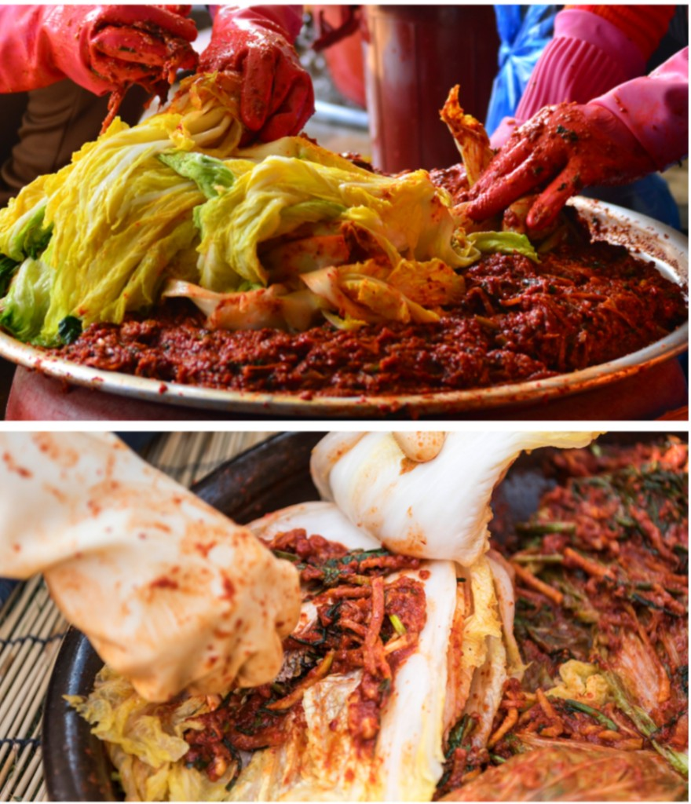

간편함
퇴근 후, 밥 + 김치.
반찬을 따로 안 만들어도 됩니다. 요리할 시간이 없는 날에도 식사는 남습니다.
2026.10.29 – 11.28
밥은 있는데, 반찬은 없다.
@bulhok_kimchiCLASS
이번 판매는 E-마케팅 수업에서 학생이 직접 하는 한 달 프로젝트입니다. 사업자 등록, 스마트스토어 입점, 마케팅, 판매, 정산까지 저희가 맡고 있습니다.
과잠에 고무장갑을 끼고 김치를 든 사진을 올릴 예정입니다.
ONE MONTH
2026.10.29 — 11.28
수업 프로젝트가 진행되는 동안만 만납니다. 이 기간에 직접 판매하고, 결과도 직접 만듭니다.
DAY
바라는 저녁은 거창하지 않습니다.
밥이 있으면 됩니다.
VS
더 싼지, 더 맛있는지는 여기서 단정하지 않습니다. 달라지는 건 저녁을 정하는 방식입니다.

그래서
불혹 김치밥 위에 올리고,
계란만 구우면 한 끼가 됩니다.

MESSAGE
메뉴를 찾던 시간이,
밥을 데우는 시간이 됩니다.
TONIGHT
요리 계획을 새로 짜지 않아도 됩니다.
이미 있는 밥이면 됩니다.
직접 먹어 본 맛은 무르지 않고 아삭했습니다.
그 끼니는 그렇게 끝납니다.
THREE
퇴근 후, 밥 + 김치.
반찬을 따로 안 만들어도 됩니다. 요리할 시간이 없는 날에도 식사는 남습니다.
라면, 볶음밥, 구운 계란.
이미 있는 메뉴에 올리면 됩니다. 오늘 메뉴를 처음부터 다시 정하지 않아도 됩니다.
배달 대신, 집에 있는 밥.
1kg, 2kg, 5kg, 10kg 중에서 고릅니다. 혼자 먹을 양부터 넉넉한 양까지 받을 수 있습니다.
SIZE
숙성 정도는 조금씩 다를 수 있습니다. 익힌 김치를 보낼 수도 있고, 저장 여유가 있으면 덜 익은 김치를 약 15일치로 맞춰 보낼 수도 있습니다. 소포장과 자른 형태를 업체와 맞출 수 있습니다. 포장에 사장님 손편지를 넣어 달라고 부탁해 두었습니다.
INFO
2023-CN-0015
HACCP은 원료부터 제조, 가공, 유통을 거쳐 먹기 전까지, 각 단계에서 문제가 될 수 있는 요소를 살펴 중요 관리점을 정하고, 식품 안전을 체계적으로 관리하는 기준입니다.
과정 사진과 포장 사진은 받는 대로 올립니다.
발효해서 만든 김치입니다. 세계김치연구소는 김치 유산균이 장에 들어가면 유전자 발현을 바꿔, 장 점막에 붙어 살아남는 쪽으로 적응한다는 연구를 발표했습니다. 이 김치 자체를 그 실험에 쓴 것은 아니므로, 제품별 균 수는 따로 적지 않습니다.
KEEP
냉장고에 두고, 받은 뒤 가급적 빨리 드세요.
김치볶음은 냉동했다가 조리해도
더 부드러운 맛이 납니다.
AFTER
받자마자 10°C 이하에 넣습니다.
가급적 빨리 드세요. 볶을 분은 냉동해도 됩니다.
조금씩 다를 수 있습니다.
구매일부터 일주일 안에 스마트스토어로 문의합니다.
수·목·금 오후 12시 이전 주문은 당일 발송되고, 다음날 받을 수 있습니다.
12시가 넘거나 양이 많으면 다음날로 넘어갈 수 있습니다. 여유가 있으면 그날 보냅니다.
배송 사고나 상품 문제는 구매일로부터 일주일 안에 스마트스토어 문의로 남겨 주세요.
택배사 사정으로 배송이 늦어질 수 있습니다.
EAT
가장 짧은 한 끼입니다.
계란만 구우면 상이 됩니다.
국물에 넣거나, 옆에 두면 됩니다.
냉동해 두었다가 볶아도 됩니다.
실제로 먹는 장면은 나중에 이어서 넣습니다.
2026년 정부 앵커사업으로, 용인시산업진흥원과 지역 소상공인과 함께하는 산학협력입니다. 지역 가게가 온라인에서 팔리는 과정을 학생이 옆에서 맡습니다.
이번 판매로 나온 수익은 용인시청 복지과와 지역 기부처에 전달될 예정입니다.
우리가 연 한 달 판매가, 지역으로 다시 돌아갑니다.
올라와 있는 후기와 블로그 글을 모으는 중입니다.
공개된 후기 화면을 이어서 붙입니다.괜찮은 한 끼를 고르는 일이, 이 프로젝트에 같이하는 일이 됩니다.
@bulhok_kimchi